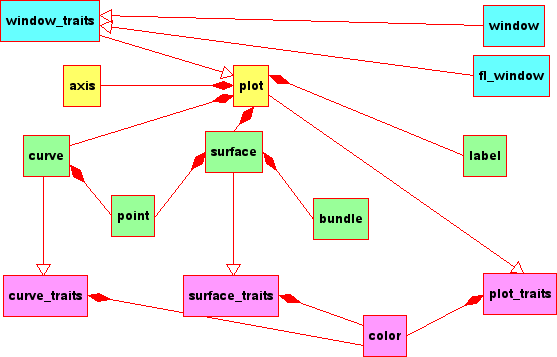
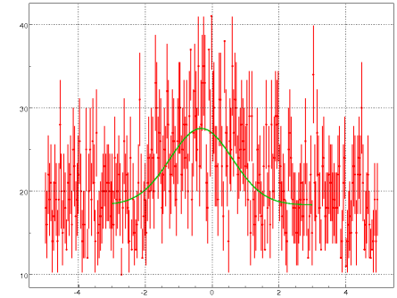
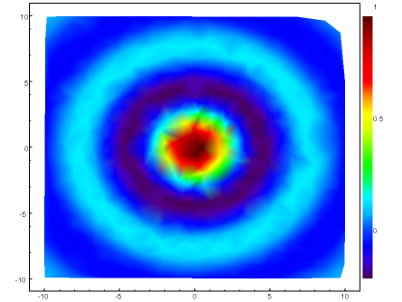
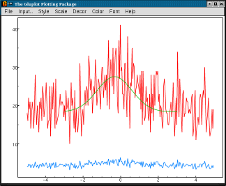
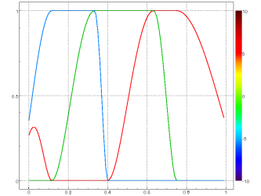
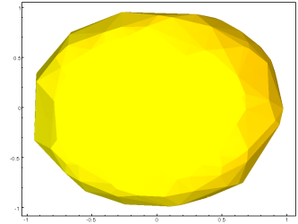
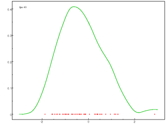
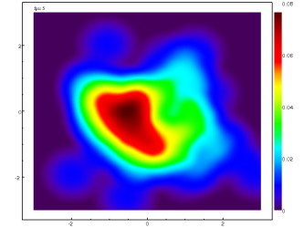
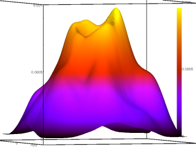
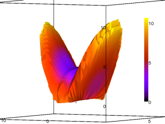

Yes, it is the clone of famous gnuplot plotting utility. But there are some features.
First of all, gluplot is OpenGL/GLU/glut based, as seen from its name.
Thus, it produces high quality plots due to
OpenGL facilities.
Gluplot also uses
GL2PS
library included in its distribution to produce output to PostScript (PS),
Encapsulated PostScript (EPS) or Portable Document Format (PDF) files.
Second and most pleasant gluplot feature is a possibility using it as
a library of C++ classes.
And in this way it is more flexible than standalone utility.
Third, gluplot provides excellent gnuplot-like auto-scaling for its axes.
Moreover, it supplies any user-defined axis distortions, including
linear and logarithmic ones of course.
Finally, gluplot is able performing true scatter plots due to triangulation.
By default, any surface without mesh is triangulated by gluplot.
Thus, user can forget about it.
In order to compile and install gluplot on your system, type the following in
the base directory of the gluplot distribution:
% ./configure
% make
% make install
To build gluplot with GUI you should install
FLTK
first.
Second, you should enable using FLTK libraries while gluplot configuring:
% ./configure --enable-fltk
Since gluplot uses autoconf you should have not trouble
compiling it.
Should you run into problems please report them to the
author.
As was mentioned above, gluplot is usable it two ways.
First, it is a console data plotting utility and is driven by command-line
options.
On the other hand, one can use gluplot API in his own C++ project.
The new gluplot user should begin by reading the general information
available by running gluplot with '--help' option.
Usage: gluplot [options] [plot options] <file>
Options: [defaults in brackets after descriptions]
Common options:
-x, --xlog set logarithmic scale for x-axis [linear]
-y, --ylog set logarithmic scale for y-axis [linear]
-z, --zlog set logarithmic scale for z-axis [linear]
-t, --no-ticks hide axis ticks [no]
-g, --grid show grid [no]
-k, --key show palette key [no]
-b, --black set background black [white]
-p, --palette <name> set color palette [rainbow]
-n, --negative invert palette [no]
-f, --font <name> set labels font [helvetica-12]
-c, --clip <name> set clipping plane [none]
Plot options:
-u, --using <string> set columns in file for plot [1:2]
-w, --with <string> set plot style [lines]
-s, --slice <string> set lines in file for plot (from:to:stride) [all]
-3, --3D perform 3D plot [no]
-v, --volume show volume in 3D plot [surface]
-a, --alpha <string> set surface transparency [1.0]
Output options:
-o, --output <file> output plot to file in EPS format [GLUT window]
Help options:
-h, --help display this help and exit
-V, --version display version information and exit
Common options are also changeable run-time by gluplot menu.
Menu is available in a top of a gluplot window in its GUI version or
by right mouse button otherwise.
Other mouse functions are implemented for detailed plot considering. For pure 2D plots, left mouse button is used for selecting region, middle mouse button is used for moving selected fragment. Clicking somewhere outside a plotting area returns the default view. For 3D plots, left mouse button is used for rotation, clicking middle mouse button returns the default orientation.
Besides the command-line interface gluplot offers a library of C++ classes.
Its main approach is separating data treatment and visualization functionalities.

All visualization is performed by plot class. It contains what is to be plot - objects of the type curve, surface or label - and provides axis that allow suitable auto-scale in a gnu-plot manner.
Classes curve and surface are just containers for points. Moreover, surface points are linked together in a mesh using bundle objects. If user defines no mesh, surface provides automatic triangulation. There are two algorithms: standard Delaunay triangulation on the x-y plane gives a z=z(x,y) graph, and triangulation in a special coordinates gives a surface bounded a volume.
Top level window and fl_window classes are ready-to-use in applications,
like gluplot itself eg.
The rest of gluplot classes - plot_traits, curve_traits and surface_traits -
are the storages for some graphical properties, such as color etc.
The following example shows ho to plot data files.
#include "gluplot.h"
using namespace glp;
int main ( int argc, char** argv )
{
gluplot pout;
pout.grid_visible ( true );
curve data = curve_from_file ( "test.dat", "1:2:3" );
curve fit = curve_from_file ( "test.fit" );
pout << YERRORBARS << data
<< LINES << fit;
return 0;
}

The following program is an example of gluplot surface functionality.
#include "gluplot.h"
using namespace glp;
#include <iostream>
#include <cstdlib>
#include <cmath>
using namespace std;
const double func ( const double & x, const double & y )
{
double arg = sqrt ( x*x + y*y );
return arg ? sin ( arg ) / arg : 1;
}
int main ( int argc, char** argv )
{
if ( argc > 2 ) {
cerr << "Usage: " << argv[0] << " [npoints]" << endl;
return 1;
}
gluplot pout;
pout.key_visible ( true );
pout.background ( BLACK );
pout.foreground ( WHITE );
surface s;
int npoints = 1024;
if ( argc == 2 ) npoints = atoi ( argv[1] );
const double low = -10;
const double high = 10;
for ( int i = 0; i < npoints; ++i ) {
double x = low + ( high - low ) * (double) rand() / RAND_MAX;
double y = low + ( high - low ) * (double) rand() / RAND_MAX;
s.push_back ( point ( x, y, func ( x, y ) ) );
}
pout << COLORMAP << s;
return 0;
}

Besides the command-line interface gluplot offers an user friendly GUI
(graphical user interface).
Just start gluplot without parameters for using it.
The main gluplot window in this case is looked as follows.

All menu items exactly correspond to the command-line options described above.
Here are some more examples.
Most of them are included in gluplot distribution.
Screenshots below demonstrates:
mapping functions for rainbow pallete,
lighting plot style,
dynamic estimations of probability density,
visualizations used by another applications.
 
 
 